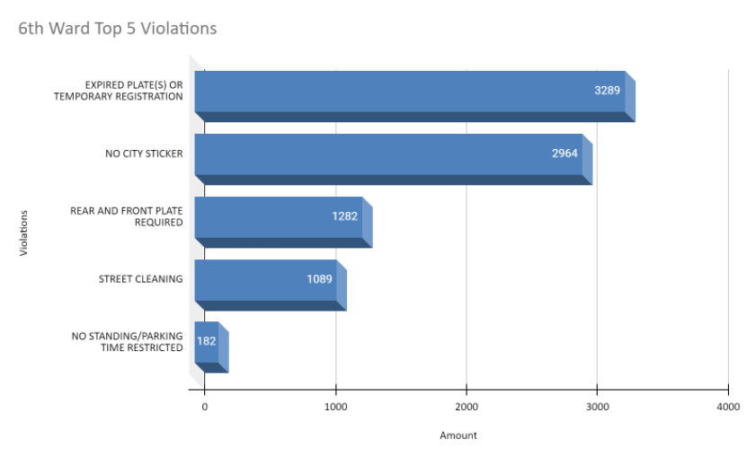

Top 5 Violation Types and How to Avoid Them
- No City Sticker
- Make sure to register your vehicle within 30 days of moving to Chicago and
get your City Sticker by paying the wheel tax
- No Standing/Parking
- Take a look at this
list of bad places to leave your vehicle provided by the City of Chicago
- Street Cleaning
- Watch out for orange signs warning of restricted parking due to street cleaning operations.
- Expired Plates
- Make sure to keep up to date your
vehicle registration and don't let your license plate expire. Be mindful of when the temporary plate
expires for purchased vechicles.
- Missing Plates
- If you have a new vehicle with a paper, temporary plate, make sure it hasn't come off
before driving. Additionally only registered vehicles should be used on city roadways.

6th Ward Violations Data Breakdown
Here you can see some important patterns in the data. Notice that significant portions
of the tickets were defined or dismissed, this could be you! Additionally many tickets
have ended in bankruptcy, which is a viable path to resolution if needed.